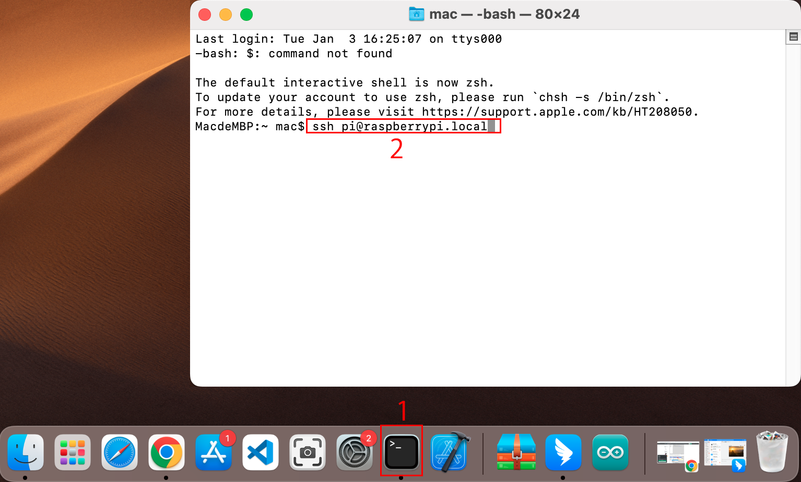

Bemerkung
Hallo und willkommen in der SunFounder Raspberry Pi & Arduino & ESP32 Enthusiasten-Gemeinschaft auf Facebook! Tauchen Sie tiefer ein in die Welt von Raspberry Pi, Arduino und ESP32 mit anderen Enthusiasten.
Warum beitreten?
Expertenunterstützung: Lösen Sie Nachverkaufsprobleme und technische Herausforderungen mit Hilfe unserer Gemeinschaft und unseres Teams.
Lernen & Teilen: Tauschen Sie Tipps und Anleitungen aus, um Ihre Fähigkeiten zu verbessern.
Exklusive Vorschauen: Erhalten Sie frühzeitigen Zugang zu neuen Produktankündigungen und exklusiven Einblicken.
Spezialrabatte: Genießen Sie exklusive Rabatte auf unsere neuesten Produkte.
Festliche Aktionen und Gewinnspiele: Nehmen Sie an Gewinnspielen und Feiertagsaktionen teil.
👉 Sind Sie bereit, mit uns zu erkunden und zu erschaffen? Klicken Sie auf [hier] und treten Sie heute bei!
Für Mac OS X Benutzer
Für Mac OS X Benutzer bietet SSH (Secure Shell) eine sichere und bequeme Methode, um auf einen Raspberry Pi aus der Ferne zuzugreifen und diesen zu steuern. Dies ist besonders praktisch, wenn man mit dem Raspberry Pi aus der Ferne arbeitet oder dieser nicht an einen Monitor angeschlossen ist. Mit der Terminal-Anwendung auf einem Mac kann man diese sichere Verbindung herstellen. Der Prozess beinhaltet einen SSH-Befehl, der den Benutzernamen und Hostnamen des Raspberry Pi einbezieht. Bei der erstmaligen Verbindung erscheint eine Sicherheitsabfrage zur Bestätigung der Authentizität des Raspberry Pi.
Um eine Verbindung zum Raspberry Pi herzustellen, geben Sie den folgenden SSH-Befehl ein:
ssh pi@raspberrypi.local
Bei Ihrem ersten Login erscheint eine Sicherheitsmeldung. Antworten Sie mit yes, um fortzufahren.
The authenticity of host 'raspberrypi.local (2400:2410:2101:5800:635b:f0b6:2662:8cba)' can't be established. ED25519 key fingerprint is SHA256:oo7x3ZSgAo032wD1tE8eW0fFM/kmewIvRwkBys6XRwg. Are you sure you want to continue connecting (yes/no/[fingerprint])?
Geben Sie das Passwort für den Raspberry Pi ein. Beachten Sie, dass das Passwort aus Sicherheitsgründen beim Eingeben nicht auf dem Bildschirm angezeigt wird.
pi@raspberrypi.local's password: Linux raspberrypi 5.15.61-v8+ #1579 SMP PREEMPT Fri Aug 26 11:16:44 BST 2022 aarch64 The programs included with the Debian GNU/Linux system are free software; the exact distribution terms for each program are described in the individual files in /usr/share/doc/*/copyright. Debian GNU/Linux comes with ABSOLUTELY NO WARRANTY, to the extent permitted by applicable law. Last login: Thu Sep 22 12:18:22 2022 pi@raspberrypi:~ $